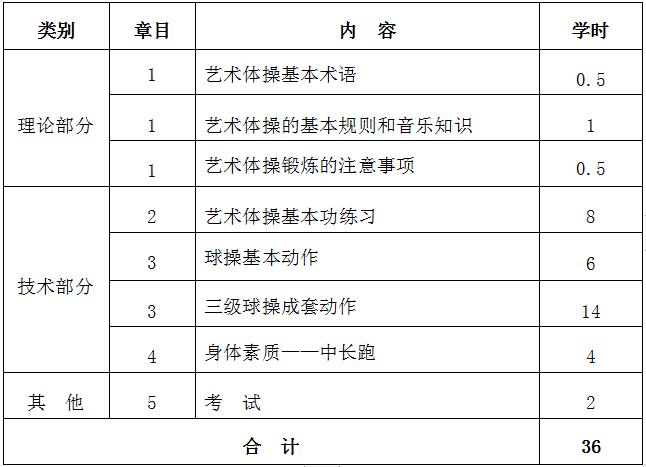
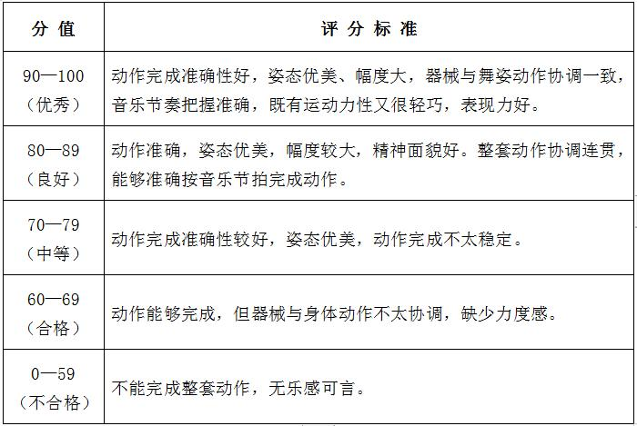

课程管理
|
课程名称 |
公共体育--艺术体操（Ⅱ） |
课程代码 |
TX031103 |
|
课程类型 |
√通识课 □学科（专业）基础课 □专业发展课 |
课程性质 |
√必修课 □选修课 |
|
开课单位 |
体育学院 |
适用专业 |
非体育专业 |
|
总学时数 |
36 |
周学时数 |
2 |
|
课程学分 |
1 |
编 写 人 |
彭秋萍 |
|
编写时间 |
2017.07.20 |
审 批 人 |
刘其龙 |
一、教学目的
1.通过艺术体操教学，使学生基本掌握大众艺术体操各类主要的徒手动作、舞蹈步伐、 轻器械的基本动作组合及大众艺术体操三级圈操成套动作内容，培养学生在音乐伴奏下完成动作的能力。
2.通过艺术体操学习，发展和提高学生柔韧、协调、灵巧、速度、力量等身体素质，提高健康水平和塑造美的形体， 从而达到增强体质，增进健康和塑造形体美的目的。
3.以优美、自然的舞姿和音乐艺术的感染力，培养学生的欣赏能力，提高审美情趣， 树立正确的审美观，同时培养学生积极进取、勇于表现和敢于拼搏的优良作风。
二、重点与难点
（一）重点：艺术体操的基本姿态与徒手动作练习；圈操的基本动作以及三级圈操成套动作练习。
（二）难点：艺术体操技术动作的协调及音乐节奏的配合，圈操成套动作组合与组合之间的衔接以及动作细节的处理。
三、基本内容与要求
理论部分
第1章 艺术体的基础知识
1.1 艺术体操基本术语
1.2 艺术体操的基本规则和音乐知识
1.3 艺术体操锻炼的注意事项
（一）教学目的：通过教学使学生对艺术体操的常用术语、基本规则和音乐知识有基本的了解。
（二）教学重点与难点：艺术体操的基本术语和基本规则。
（三）基本内容：艺术体操的基本术语；艺术体操的基本规则；艺术体操的音乐知识。
技术部分
第2章 艺术体操基本功练习
2.1 基本姿态：头、肩、胸、手臂、腰髋、躯干的基本姿态和基本动作。
2.2 波浪舞姿组合。
2.3 腿的练习：
（1）把杆：擦地、下蹲、移重心。
（2）地上练习：摆腿、吸腿、踢腿、压腿、举腿。
（一）教学目的：通过教学使学生初步掌握艺术体操的基本姿态， 能灵活运用手臂的摆动、绕环、波浪等动作，为后续器械动作的学习打下基础。
（二）教学重点与难点：头、肩、胸、手臂、腰髋、躯干的基本姿态和基本动作。
（三）基本内容：艺术体操基本功练习。
第3章 球操的基本动作与组合套路
3.1 球的基本动作：持球、转动、拍球、摆动、绕环、抛接、滚动
3.2 球的基本动作组合
3.3 三级球操成套动作
（一）教学目的：通过教学使学生掌握球操的基本动作，熟练运用球的各种玩法， 熟练掌握三级球操的各个组合的动作，并能配合音乐完成球操套路动作。
（二）教学重点与难点：持球、转动、拍球、摆动、绕环、抛接、滚动。
（三）基本内容：球的基本动作；球的基本动作组合；三级球操成套动作。
第4章 身体素质——中长跑
4.1 起跑和起跑后的加速
4.2 途中跑、终点跑
4.3 中长跑的呼吸
4.4 全程跑：1000米（男生）、800米（女生）
（一）教学目的：通过教学使学生掌握起跑和起跑后的加速、途中跑、终点跑等中长跑的基本技术，学会正确的呼吸方式，发展耐力素质，进一步增强心肺功能。
（二）重点与难点：途中跑技术；中长跑的呼吸。
（三）基本内容：起跑和起跑后的加速、途中跑、终点跑等基本技术；全程跑。
四、授课内容学时分配
五、成绩考核：
（一）考核方式：现场测试。
综合成绩＝平时成绩×30%＋考试成绩×70%，考试成绩＝专项成绩×70%＋身体素质成绩×30%。 每一部分都有定量或定性的评分标准，其中身体素质为每学期的必考项目，身体素质考试内容为d女子800米。
（二）考试内容：艺术体操三级圈操成套动作、身体素质（女子800米）。
（三）评分标准：
1．圈操成套动作评分标准
2.身体素质（女子800米）：评分标准见表1。
六、教材与参考书目
（一）使用教材：
[1] 普通高等学校公共体育示范性教材——艺术体操.北京：高等教育出版社，2006．
（二）参考书目：
[1] 体育学院普修通用教材——大众艺术体操.北京：人民体育出版社，1999．
[2] 王爱兰主编. 艺术体操运动训练之研究. 北京：人民体育出版社，1991．
表1 身体素质考核评分标准

注：数据来源于国家学生体质健康标准（2014年修订）。